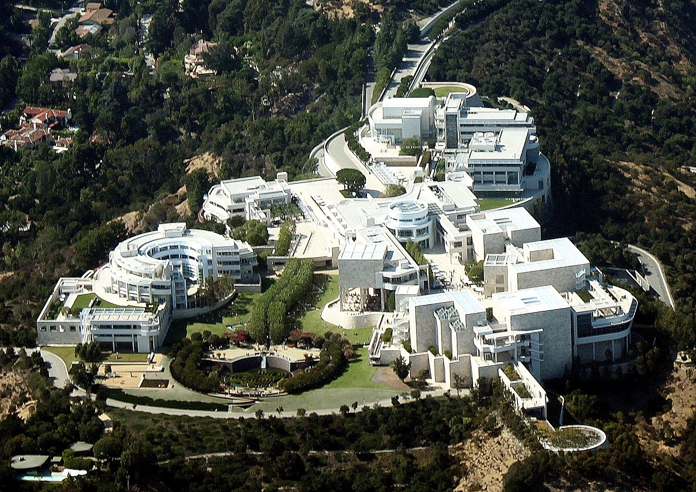

The Getty Center is a world-renowned art institution located in Los Angeles, California. Situated on a hilltop in the Santa Monica Mountains, it offers breathtaking views of the city skyline and the Pacific Ocean, making it a must-visit destination for art lovers and architecture enthusiasts.
The Getty Center houses an extensive collection of Western art from the Middle Ages to the present. Explore the museum's galleries to admire masterpieces by renowned artists, including Van Gogh, Rembrandt, Monet, and Michelangelo. The diverse range of art forms, from paintings and sculptures to photography and decorative arts, offers a comprehensive experience of artistic expression throughout history.
In addition to its art collection, the Getty Center is renowned for its stunning architecture and meticulously landscaped gardens. Designed by architect Richard Meier, the museum's buildings are characterized by their sleek, modernist style and extensive use of white marble. Take a leisurely stroll through the outdoor sculpture garden, enjoy the tranquil fountains and gardens, and appreciate the seamless integration of art, architecture, and nature.
The Getty Center also offers various educational programs, lectures, and workshops for visitors of all ages. Immerse yourself in the world of art through guided tours, interactive exhibits, and engaging activities. Additionally, the museum's restaurant and café provide a range of dining options, from casual meals to elegant culinary experiences, all with stunning views of the surrounding landscape.
Admission to the Getty Center is free; however, parking requires a fee. The museum provides a complimentary tram service that transports visitors from the parking area to the main entrance. It's advisable to check the museum's website for any updates or special exhibitions before planning your visit.
Whether you're an art enthusiast, a history buff, or simply seeking a serene and culturally enriching experience, the Getty Center offers a world-class destination for art, architecture, and breathtaking views of Los Angeles. Explore its collections, marvel at its stunning design, and create lasting memories in this iconic cultural landmark.